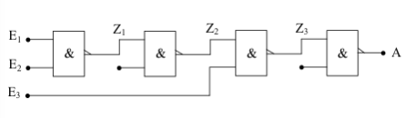
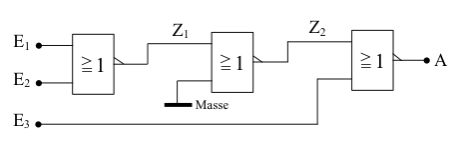
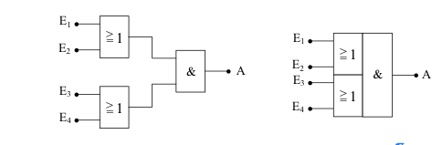
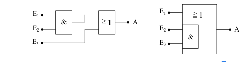
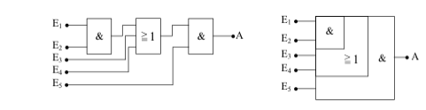
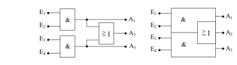

Gatter mit mehreren Eingängen
Oftmals ist es nötig, Verknüpfungsschaltungen mit 3 oder 4 Eingängen in eine Schaltung zu integrieren. Haben Sie diese Gatter nicht zur Hand, so kann man sie mit den unten abgebildeten Schaltungen aufbauen.
AND mit 3 Eingängen aus 4 NAND
Zuerst die AND-Verknüpfung mit 3 Eingängen. Die folgende Tabelle zeigt, dass die abgebildete Schaltung einem AND-Gatter mit 3 Eingängen entspricht. Eingezeichnet sind auch die Zwischenausgänge Z1, Z2 und Z3.
| E1 | E2 | E3 | Z1 | Z2 | Z3 | A |
|---|---|---|---|---|---|---|
| 0 | 0 | 0 | 1 | 0 | 1 | 0 |
| 0 | 0 | 1 | 1 | 0 | 1 | 0 |
| 0 | 1 | 0 | 1 | 0 | 1 | 0 |
| 0 | 1 | 1 | 1 | 0 | 1 | 0 |
| 1 | 0 | 0 | 1 | 0 | 1 | 0 |
| 1 | 0 | 1 | 1 | 0 | 1 | 0 |
| 1 | 1 | 0 | 0 | 1 | 1 | 0 |
| 1 | 1 | 1 | 0 | 1 | 0 | 1 |

Nach diesem Schema lässt sich auch eine UND-Schaltung mit 4 Eingängen aus 6 NAND-Gattern aufbauen usw.
NOR-Gatter mit 3 Eingängen aus 3 NOR-Gattern
Die folgende Logiktafel mit den Zwischenausgängen gibt auch hier wiederum Auskunft darüber, dass das Verhalten der Schaltung dem eines NOR-Gatters mit 3 Eingängen entspricht.
| E1 | E2 | E3 | Z1 | Z2 | A |
|---|---|---|---|---|---|
| 0 | 0 | 0 | 1 | 0 | 1 |
| 0 | 0 | 1 | 1 | 0 | 0 |
| 0 | 1 | 0 | 0 | 1 | 0 |
| 0 | 1 | 1 | 0 | 1 | 0 |
| 1 | 0 | 0 | 0 | 1 | 0 |
| 1 | 0 | 1 | 0 | 1 | 0 |
| 1 | 1 | 0 | 0 | 1 | 0 |
| 1 | 1 | 1 | 0 | 1 | 0 |

Auch bei dieser Schaltung lassen sich durch Hinzufügen weiterer NOR-Gatter Schaltungen erzeugen, die sich wie große NOR-Gatter mit noch mehr Eingängen verhalten.
Kombi Schaltungen
Neben den bisher gezeigten Verknüpfungsschaltungen gibt es noch weitere Schaltsymbole für spezielle Kombinationen. Daher der Name Kombi-Schaltungen. Sie werden in dieser Form sehr häufig für Decoder und andere logische Schaltungen benötigt. Aus diesem Grunde hat man auch für sie vereinfachte Darstellungen gefunden.
Zwei OR-Gatter, deren Ausgänge über ein AND Gatter verknüpft sind

AND-Gatter, das mit einem OR-Gatter verknüpft ist

AND-Gatter verknüpft mit einem OR-Gatter (3 Eingänge) und nachgeschaltetem AND-Gatter

Zwei AND-Gatter, deren Ausgänge durch ein OR-Gatter miteinander verknüpft sind
